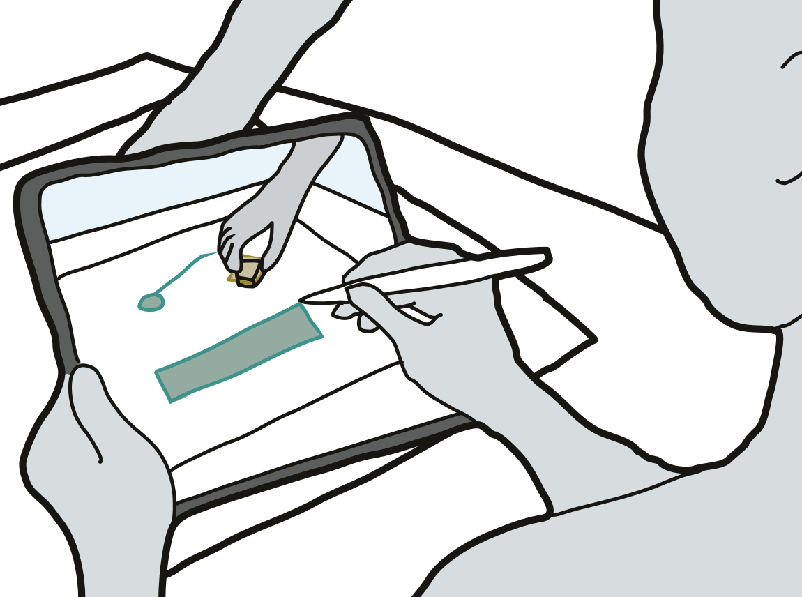
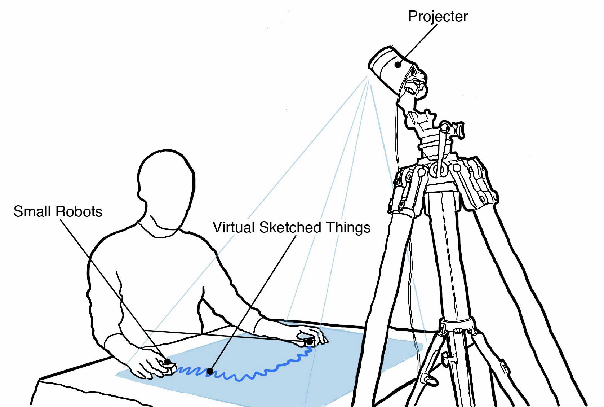

Hiroki Kaimoto, Kyzyl Monteiro, Mehrad Faridan, Jiatong Li, Samin Farajian, Yasuaki Kakehi, Ken Nakagaki, Ryo Suzuki
ACM LinkThis paper introduces Sketched Reality, an approach that com- bines AR sketching and actuated tangible user interfaces (TUI) for bi-directional sketching interaction. Bi-directional sketching enables virtual sketches and physical objects to "affect" each other through physical actuation and digital computation. In the existing AR sketching, the relationship between virtual and physical worlds is only one-directional --- while physical interaction can affect virtual sketches, virtual sketches have no return effect on the physical objects or environment. In contrast, bi-directional sketching interaction allows the seamless coupling between sketches and actuated TUIs.
In this paper, we employ tabletop-size small robots (Sony Toio) and an iPad-based AR sketching tool to demonstrate the concept. In our system, virtual sketches drawn and simulated on an iPad (e.g., lines, walls, pendulums, and springs) can move, actuate, collide, and constrain physical Toio robots, as if virtual sketches and the physical objects exist in the same space through seamless coupling between AR and robot motion. This paper contributes a set of novel interactions and a design space of bi-directional AR sketching. We demonstrate a series of potential applications, such as tangible physics education, explorable mechanism, tangible gaming for children, and in-situ robot programming via sketching
To demonstrate our concept, we built SketchedActuation, a sys- tem that consists of small tabletop robots and laser projector pro- jection mapping. For the small tabletop robots, we use Sony Toio, the mobile remote controllable robot that can track and feedback their position and orientation. We use Nebula Capsule, the mobile laser projector, for the projection mapping. We combined this two basic hardware and set the Virtual-Physical mixed environment.
